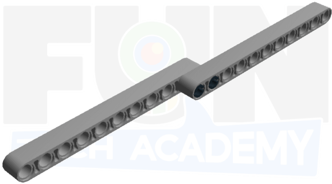

Ahora que ya hemos practicado bastante con cada uno de los giros, haremos un circuito con cinta aislante negra en nuestra mesa de este estilo.

En cada una de las curvas aplicaremos el giro que mejor nos convenga para que se salga lo mínimo posible del circuito.